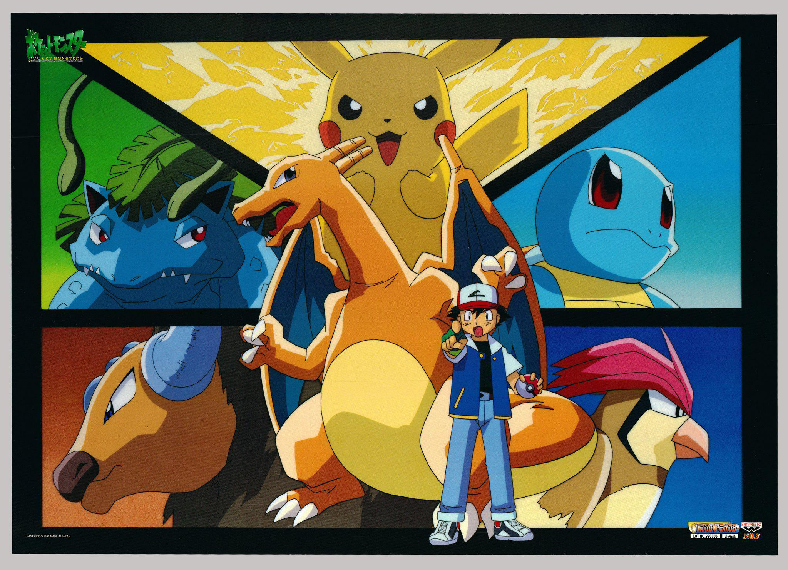

Overview
Pokemon is one of my most favorite anime. This tells the story of Ash Ketchum and his quest to come a Pokemon champion. He started his journey with his partner Pokemon, Pikachu. Throughout his journey, he was able to catch and train other Pokemon which helped him in defeating the 8 Gym Leaders in the Kanto Region.
Along the way, he met Charmander (Who later evolved into the mighty Charizard), Bulbasaur, Squirtle, Muk, Tauros, Krabby and Pidgey (Who evolved into Pidgeotto). Even though they lost in the Pokemon League, they were able to form a strong bond that lasted through Ash's travel to other region.